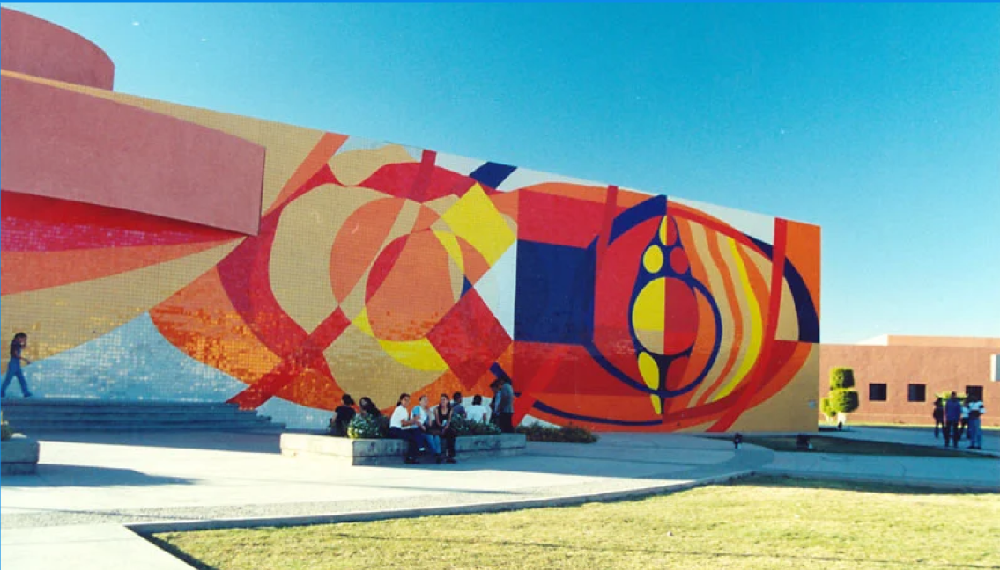

Proyecto de Área Verde
Se percibió una recurrente sensación de sofoco en el campus durante los periodos de calor, lo cual motivó la reflexión sobre posibles soluciones. La propuesta surgió al considerar la inclusión de más árboles como una estrategia para mitigar este efecto y crear un entorno más fresco y agradable. Se planteó entonces la idea de no solo integrar estos árboles, sino también de aprovechar las nuevas áreas verdes resultantes para establecer espacios de encuentro y convivencia al aire libre.

El proyecto, concebido para el campus de Nainari del ITSON, se centra en dos objetivos principales: la instalación de más bancos y la creación de áreas comunes verdes. Estas medidas buscan no solo mejorar el ambiente físico del campus, sino también fomentar la interacción social y promover actividades educativas al aire libre entre los estudiantes.
Para llevar a cabo esta iniciativa de manera efectiva, se ha previsto un plan detallado que incluye la identificación de zonas estratégicas dentro del campus para la implementación de estos espacios verdes. Se considerará cuidadosamente la accesibilidad y la distribución equitativa en todas las áreas del campus, priorizando aquellas ubicaciones cercanas a los edificios académicos y con alta afluencia estudiantil.
Al implementar estas medidas, se aspira a transformar el campus en un espacio más acogedor y amigable para la comunidad estudiantil. La presencia de áreas verdes y bancos no solo contribuirá a reducir la sensación de sofoco durante los días calurosos, sino que también proporcionará lugares de encuentro y descanso donde los estudiantes puedan relajarse, estudiar al aire libre o reunirse con sus compañeros.
Además de los beneficios evidentes para el bienestar físico y emocional de los estudiantes, la creación de estas áreas comunes verdes puede fomentar la cohesión social y fortalecer el sentido de pertenencia a la comunidad universitaria. Se espera que estos espacios se conviertan en puntos de reunión naturales, donde se desarrollen actividades sociales, culturales y educativas que enriquezcan la experiencia estudiantil fuera del aula.